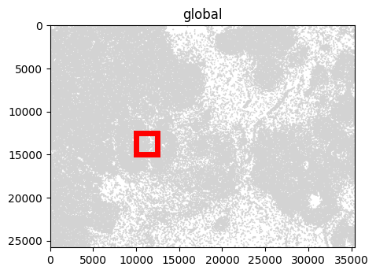
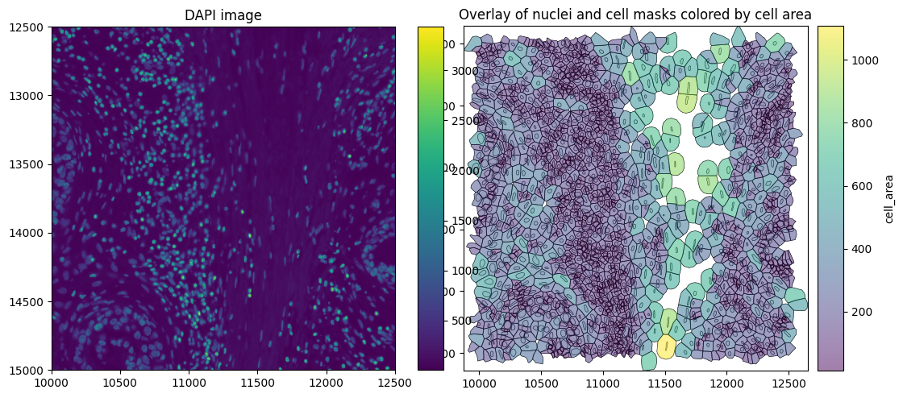
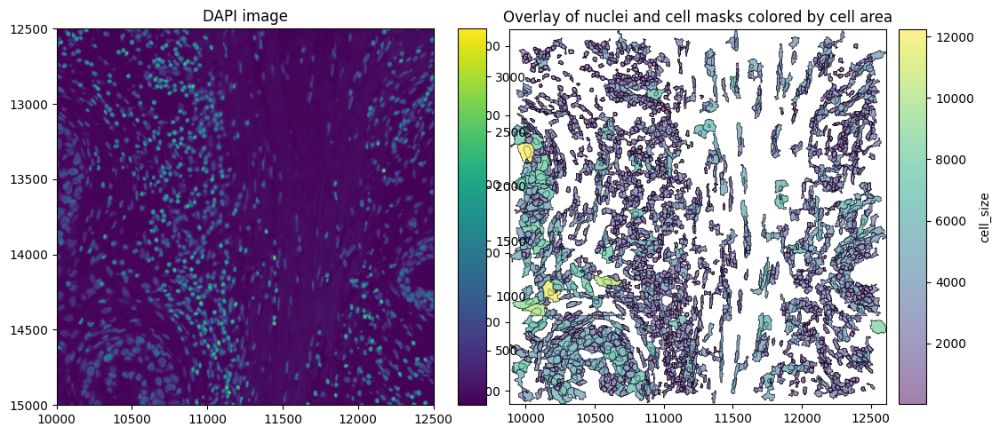
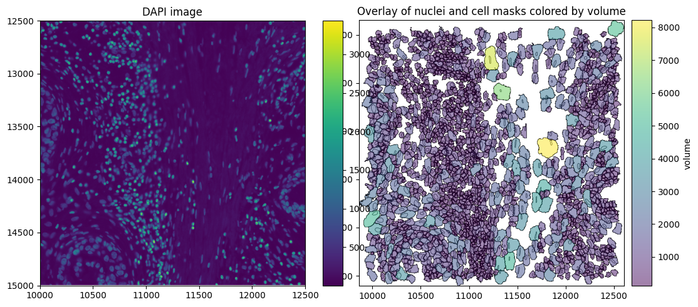
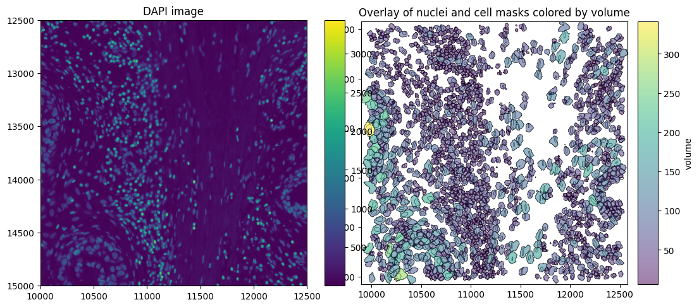

Data Preparation#
In order to use SegTraQ, you first need to get your data into a SpatialData object. While spatialdata_io has a lot of readers for different technologies, the constantly evolving landscape of segmentation methods makes it difficult to provide up-to-date, generalizable readers. To facilitate the process of getting your data into the correct format, we provide examples for some segmentation methods.
To follow along with this tutorial, you can download the data from here.
[ ]:
[1]:
import spatialdata_io # noqa
import spatialdata_plot # noqa
import segtraq
import matplotlib.pyplot as plt
import matplotlib.patches as patches
import pandas as pd
import anndata as ad
import tifffile as tiff
import numpy as np
import geopandas as gpd
import spatialdata as sd
import gzip
import shapely
import json
import cv2
from pathlib import Path
from rasterio.features import shapes
from shapely.geometry import shape
from scipy.sparse import csr_matrix
from spatialdata.models import PointsModel
from spatialdata.transformations import (
get_transformation,
set_transformation,
)
/g/huber/users/lazic/src/SegTraQ/.venv/lib/python3.13/site-packages/tqdm/auto.py:21: TqdmWarning: IProgress not found. Please update jupyter and ipywidgets. See https://ipywidgets.readthedocs.io/en/stable/user_install.html
from .autonotebook import tqdm as notebook_tqdm
Below, we define a few custom functions that will be required for reading data below.
[2]:
def labels_to_shapes(label_img: np.ndarray, simplify_tolerance: float | None = 0.5) -> gpd.GeoDataFrame:
if label_img.ndim != 2:
raise ValueError("Input label_img must be 2D.")
lab = np.asarray(label_img)
lab = lab.astype(np.int32, copy=False)
mask = lab != 0
geoms = []
ids = []
for geom_mapping, value in shapes(lab, mask=mask, connectivity=8):
ids.append(int(value))
geoms.append(shape(geom_mapping))
gdf = gpd.GeoDataFrame({"cell_id": ids, "geometry": geoms}).set_index("cell_id")
gdf = gdf.dissolve(by="cell_id", as_index=True)
if simplify_tolerance and simplify_tolerance > 0 and not gdf.empty:
gdf["geometry"] = shapely.simplify(gdf.geometry.values, simplify_tolerance, preserve_topology=True)
return gdf
def crop(ws, bb_xmin, bb_ymin, bb_xmax, bb_ymax):
return ws.query.bounding_box(
axes=["x", "y"],
min_coordinate=[bb_xmin, bb_ymin],
max_coordinate=[bb_xmax, bb_ymax],
target_coordinate_system="global",
)
def read_geojson_gz(path):
with gzip.open(path, "rt") as f:
data = json.load(f)
return gpd.GeoDataFrame.from_features(data["features"])
Setting the data path:
[3]:
data_path = Path("/g/huber/projects/CODEX/segtraq/data/20260113_Janesick_Replicate1/xenium")
Xenium#
For Xenium data, we can make use of the functions from spatialdata_io. We don’t need cells_as_circles, cell_labels, nucleus_labels and morphology_mip for SegTraQ, so we will not read these data.
[4]:
sdata_xenium = spatialdata_io.xenium(
data_path, cells_as_circles=False, cells_labels=False, nucleus_labels=False, morphology_mip=False
)
sdata_xenium
/g/huber/users/lazic/src/SegTraQ/.venv/lib/python3.13/site-packages/spatialdata/_core/spatialdata.py:170: UserWarning: The table is annotating 'cell_labels', which is not present in the SpatialData object.
self.validate_table_in_spatialdata(v)
[4]:
SpatialData object
├── Images
│ └── 'morphology_focus': DataTree[cyx] (1, 25778, 35416), (1, 12889, 17708), (1, 6444, 8854), (1, 3222, 4427), (1, 1611, 2213)
├── Points
│ └── 'transcripts': DataFrame with shape: (8000000, 8) (3D points)
├── Shapes
│ ├── 'cell_boundaries': GeoDataFrame shape: (167780, 1) (2D shapes)
│ └── 'nucleus_boundaries': GeoDataFrame shape: (167780, 1) (2D shapes)
└── Tables
└── 'table': AnnData (167780, 313)
with coordinate systems:
▸ 'global', with elements:
morphology_focus (Images), transcripts (Points), cell_boundaries (Shapes), nucleus_boundaries (Shapes)
For visualization, we crop the SpatialData object to zoom into a smaller region.
[5]:
bb_xmin = 10000
bb_ymin = 12500
bb_w = 2500
bb_h = 2500
bb_xmax = bb_xmin + bb_w
bb_ymax = bb_ymin + bb_h
f, ax = plt.subplots(figsize=(5, 5))
sdata_xenium.pl.render_shapes("cell_boundaries").pl.show(ax=ax)
rect = patches.Rectangle((bb_xmin, bb_ymin), bb_w, bb_h, linewidth=5, edgecolor="red", facecolor="none")
ax.add_patch(rect)
/g/huber/users/lazic/src/SegTraQ/.venv/lib/python3.13/site-packages/spatialdata/_core/spatialdata.py:170: UserWarning: The table is annotating 'cell_labels', which is not present in the SpatialData object.
self.validate_table_in_spatialdata(v)
/g/huber/users/lazic/src/SegTraQ/.venv/lib/python3.13/site-packages/spatialdata/_core/spatialdata.py:170: UserWarning: The table is annotating 'cell_labels', which is not present in the SpatialData object.
self.validate_table_in_spatialdata(v)
[5]:
<matplotlib.patches.Rectangle at 0x7ffdcd0aa0d0>

Cropping currently suffers from performance issues, and can take tens of minutes on large datasets. This will be improved in future releases of SpatialData.
[6]:
# Link table to spatial element before cropping
sdata_xenium.tables["table"].obs["region"] = "cell_boundaries"
sdata_xenium.tables["table"].obs["region"] = sdata_xenium.tables["table"].obs["region"].astype("category")
sdata_xenium.set_table_annotates_spatialelement("table", region="cell_boundaries")
[7]:
sdata_xenium_crop = crop(sdata_xenium, bb_xmin, bb_ymin, bb_xmax, bb_ymax)
The SpatialData plot below shows the cell boundaries colored by cell area. Xenium version 1 uses nuclear expansion to generate cell boundaries.
[8]:
axes = plt.subplots(1, 2, figsize=(10, 5), constrained_layout=True)[1].flatten()
# Plot DAPI image
sdata_xenium_crop.pl.render_images("morphology_focus").pl.show(
ax=axes[0], title="DAPI image", coordinate_systems="global"
)
# Plot overlay of nuclei and cell boundaries colored by cell area
sdata_xenium_crop.pl.render_shapes(
element="nucleus_boundaries",
fill_alpha=0.2,
outline_alpha=1.0,
outline_width=0.5,
outline_color="black",
).pl.render_shapes(
element="cell_boundaries",
color="cell_area",
cmap="viridis",
fill_alpha=0.5,
outline_alpha=1.0,
outline_width=0.5,
outline_color="black",
).pl.show(ax=axes[1], title="Overlay of nuclei and cell masks colored by cell area", colorbar=True)

Finally, we can read these into SegTraQ. Don’t worry if you do not know all of these parameters up front, you can start by simply passing an sdata object into the function and it will tell you exactly which parameters need to be set.
[9]:
st_xenium = segtraq.SegTraQ(
sdata_xenium,
tables_centroid_x_key=None,
tables_centroid_y_key=None,
points_background_id=-1, # "UNASSIGNED" for Xenium prime
)
/g/huber/users/lazic/src/SegTraQ/src/segtraq/SegTraQ.py:162: RuntimeWarning: No centroids specified for tables. Centroids will be automatically computed from shapes.
validate_spatialdata(
/g/huber/users/lazic/src/SegTraQ/src/segtraq/SegTraQ.py:190: UserWarning: Filtering control and low-quality transcripts from the SpatialData object in-place. Set filter_kwargs={'inplace': False} to avoid modifying the original object.
sdata_new = _filter_control_and_low_quality_transcripts(
/g/huber/users/lazic/src/SegTraQ/src/segtraq/SegTraQ.py:190: RuntimeWarning: Cell IDs differ between assigned transcript points and the expression table. 0 cells occur only in points (e.g. []), and 1417 occur only in the table (e.g. [np.int32(110751), np.int32(110754), np.int32(110755), np.int32(110756), np.int32(110759)]). Please check that the transcript assignments and `filter_kwargs` are consistent with how the expression table was generated.
sdata_new = _filter_control_and_low_quality_transcripts(
BIDCell#
Depending on the segmentation method applied to re-segment the Xenium data, the data output format will differ. No SpatialData readers are available for individual segmentation methods. Below, we demonstrate how to load data from the output of the segmentation method BIDCell into SpatialData.
The single-cell expression and metadata are first loaded into an AnnData object.
[10]:
csv_files = list(data_path.glob("bidcell_output/cell_gene_matrices/202*/cell*.csv"))
dfs = [pd.read_csv(f) for f in csv_files]
merged_df = pd.concat(dfs, ignore_index=True).sort_values("cell_id").reset_index(drop=True)
meta_cols = ["cell_id", "cell_centroid_x", "cell_centroid_y", "cell_size"]
expr_cols = [c for c in merged_df.columns if c not in meta_cols]
obs = merged_df[meta_cols].copy()
obs["cell_id"] = obs["cell_id"].astype(np.int32)
obs["region"] = "cell_boundaries"
obs["region"] = obs["region"].astype("category") # required for new version of SpatialData
X = merged_df[expr_cols].to_numpy()
var = pd.DataFrame(index=pd.Index(expr_cols))
adata = ad.AnnData(X=X, obs=obs, var=var)
/home/lazic/.local/share/uv/python/cpython-3.13.5-linux-x86_64-gnu/lib/python3.13/functools.py:934: ImplicitModificationWarning: Transforming to str index.
return dispatch(args[0].__class__)(*args, **kw)
BIDCell outputs cell and nucleus boundaries as a raster (label image) rather than vector shapes (polygons). Therefore, we first convert the rasterized boundaries into polygon geometries using labels_to_shapes. Nucleus boundaries are not copied from Xenium, because BIDCell, re-runs nuclear segmentation internally via Cellpose.
[11]:
cell_label_files = list(data_path.glob("bidcell_output/model_outputs/202*/test_output/*_connected.tif"))
cell_labels = tiff.imread(cell_label_files[0])
nucleus_labels = tiff.imread(data_path / "bidcell_output/nuclei.tif")
cell_shapes_gdf = labels_to_shapes(cell_labels, simplify_tolerance=0.5)
nucleus_shapes_gdf = labels_to_shapes(nucleus_labels, simplify_tolerance=0.5)
BIDCell filters the Xenium transcripts file prior to segmentation by removing low-quality transcripts (qv < 20) and control probes. However, the cell IDs in the processed transcripts file (transcripts_processed.csv) still correspond to the original Xenium segmentation. Therefore, we reassign cell IDs based on the BIDCell segmentation masks, following the same coordinate scaling and mask-based assignment used by BIDCell to ensure that transcript assignments match the reported expression
matrix.
[12]:
transcripts_path = data_path / "bidcell_output/transcripts_processed.csv"
transcripts_df = pd.read_csv(transcripts_path, index_col=0)
transcripts_df.rename(
columns={"cell_id": "original_cell_id", "x_location": "x", "y_location": "y", "z_location": "z"}, inplace=True
)
scale_pix_x = 0.2125 # config.affine.scale_pix_x
scale_pix_y = 0.2125 # config.affine.scale_pix_y
height, width = cell_labels.shape
height_pix = np.round(height / scale_pix_y).astype(int)
width_pix = np.round(width / scale_pix_x).astype(int)
cell_labels_rescaled = cv2.resize(
cell_labels.astype(np.int32),
(width_pix, height_pix),
interpolation=cv2.INTER_NEAREST,
)
x = transcripts_df["x"].div(scale_pix_x).round().astype(int)
y = transcripts_df["y"].div(scale_pix_y).round().astype(int)
transcripts_df["cell_id"] = cell_labels_rescaled[y, x]
transcripts_df["feature_name"] = transcripts_df["feature_name"].astype("category")
The SpatialData object can then be built from the AnnData object, the cell_boundaries, nucleus_boundaries and transcripts. We link the table observations to the shapes by specifying region_key, region, and instance_key. region_key is the column in adata.obs (e.g. "region") that indicates which SpatialData element the observations refer to (here "cell_boundaries"). instance_key is the column in adata.obs (e.g. "cell_id") containing the
object IDs, which are matched to the index of sdata.shapes[region]. Therefore, make sure that sdata.shapes["cell_boundaries"].index aligns with adata.obs[instance_key].
[13]:
sdata_bidcell = sd.SpatialData(
points={"transcripts": sd.models.PointsModel.parse(transcripts_df)},
shapes={
"cell_boundaries": sd.models.ShapesModel.parse(cell_shapes_gdf),
"nucleus_boundaries": sd.models.ShapesModel.parse(nucleus_shapes_gdf),
},
tables={
"table": sd.models.TableModel.parse(
adata, region_key="region", region="cell_boundaries", instance_key="cell_id"
)
},
)
Finally, we read in the image. Here, we have to make sure that the individual layers are aligned and hence set transformations in line with the xenium data. If you do not have an sdata_xenium object that you can read the transformations from, you can also read in the image manually using sd.models.Image2DModel(tiff.imread("morphology_focus.ome.tif")).
[14]:
sdata_bidcell.images["morphology_focus"] = sdata_xenium.images["morphology_focus"]
xenium_transformation = get_transformation(sdata_xenium.shapes["cell_boundaries"])
set_transformation(sdata_bidcell.shapes["cell_boundaries"], xenium_transformation)
set_transformation(sdata_bidcell.shapes["nucleus_boundaries"], xenium_transformation)
set_transformation(sdata_bidcell.points["transcripts"], xenium_transformation)
We crop the SpatialData object as before to visualize the data.
[15]:
sdata_bidcell_crop = crop(sdata_bidcell, bb_xmin, bb_ymin, bb_xmax, bb_ymax)
[16]:
axes = plt.subplots(1, 2, figsize=(10, 5), constrained_layout=True)[1].flatten()
# Plot DAPI image
sdata_bidcell_crop.pl.render_images("morphology_focus").pl.show(
ax=axes[0], title="DAPI image", coordinate_systems="global"
)
# Plot overlay of nuclei and cell boundaries colored by cell area
sdata_bidcell_crop.pl.render_shapes(
element="nucleus_boundaries",
fill_alpha=0.2,
outline_alpha=1.0,
outline_width=0.5,
outline_color="black",
).pl.render_shapes(
element="cell_boundaries",
color="cell_size",
cmap="viridis",
fill_alpha=0.5,
outline_alpha=1.0,
outline_width=0.5,
outline_color="black",
).pl.show(ax=axes[1], title="Overlay of nuclei and cell masks colored by cell area", colorbar=True)

Finally, we can initialize the SegTraQ object, based on which all metrics can be computed. Naming will differ between segmentation methods, e.g. cell_area in Xenium and cell_size in BIDCell in addition to other settings like the points_background_id. Please set parameters accordingly.
[17]:
st_bidcell = segtraq.SegTraQ(
sdata_bidcell,
tables_area_key="cell_size",
tables_centroid_x_key="cell_centroid_x",
tables_centroid_y_key="cell_centroid_y",
points_background_id=0,
)
/g/huber/users/lazic/src/SegTraQ/src/segtraq/SegTraQ.py:190: UserWarning: Filtering control and low-quality transcripts from the SpatialData object in-place. Set filter_kwargs={'inplace': False} to avoid modifying the original object.
sdata_new = _filter_control_and_low_quality_transcripts(
/g/huber/users/lazic/src/SegTraQ/src/segtraq/SegTraQ.py:190: RuntimeWarning: Cell IDs differ between assigned transcript points and the expression table. 0 cells occur only in points (e.g. []), and 1849 occur only in the table (e.g. [np.int32(1), np.int32(3), np.int32(4), np.int32(5), np.int32(7)]). Please check that the transcript assignments and `filter_kwargs` are consistent with how the expression table was generated.
sdata_new = _filter_control_and_low_quality_transcripts(
Proseg 2#
Below, we show how to read data from the older proseg version 2 into the SpatialData format. Proseg version 2 does not output a SpatialData object, so the latter has to be built from scratch.
We first load the Proseg transcript metadata and reconstruct the cell-by-gene count matrix from the hard transcript assignments. This ensures that the expression matrix and transcript-level cell assignments represent the same segmentation.
[18]:
# Read transcript-level ProSeg assignments
transcripts_df = pd.read_csv(
data_path / "proseg_output_v2/transcript-metadata.csv.gz",
compression="gzip",
)
background_id = 2**32 - 1
# Build integer cell × gene counts from hard transcript assignments
counts_df = (
transcripts_df.loc[transcripts_df["assignment"] != background_id]
.groupby(["assignment", "gene"], observed=True)
.size()
.unstack(fill_value=0)
)
# Cell metadata
obs = pd.read_csv(
data_path / "proseg_output_v2/cell-metadata.csv.gz",
compression="gzip",
)
obs["region"] = "cell_boundaries"
obs["region"] = obs["region"].astype("category")
# Align count matrix to ProSeg cells
counts_df = counts_df.reindex(index=obs["cell"], fill_value=0)
X = csr_matrix(counts_df.to_numpy(dtype=np.int32))
var = pd.DataFrame(index=counts_df.columns.astype(str))
adata = ad.AnnData(X=X, obs=obs, var=var)
/home/lazic/.local/share/uv/python/cpython-3.13.5-linux-x86_64-gnu/lib/python3.13/functools.py:934: ImplicitModificationWarning: Transforming to str index.
return dispatch(args[0].__class__)(*args, **kw)
Next, we read the vector shapes (polygons). These are stored in a GeoJSON file and can be read using read_geojson_gz and to_cell_shapes. Proseg is a quasi-3D method and provides cell boundaries for each z-layer and well as a 2D projection.
[19]:
polygons_layers_gz_path = data_path / "proseg_output_v2/cell-polygons-layers.geojson.gz"
polygons_gz_path = data_path / "proseg_output_v2/cell-polygons.geojson.gz"
shapes_dict = {}
# 3D layers
polygons_layers_gdf = read_geojson_gz(polygons_layers_gz_path)
for z, gdf in polygons_layers_gdf.groupby("layer", sort=True):
shapes_dict[f"cell_boundaries_z{int(z)}"] = sd.models.ShapesModel.parse(
gdf[gdf.geometry.notna() & ~gdf.geometry.is_empty]
)
shapes_dict[f"cell_boundaries_z{int(z)}"].set_index("cell", drop=True, inplace=True)
# 2D projection
gdf = read_geojson_gz(polygons_gz_path)
shapes_dict["cell_boundaries"] = sd.models.ShapesModel.parse(gdf[gdf.geometry.notna() & ~gdf.geometry.is_empty])
shapes_dict["cell_boundaries"].set_index("cell", drop=True, inplace=True)
Next, we load transcripts. Proseg internally filters control probes and transcripts with a qv < 20. Thus, there will be fewer transcripts than in sdata_xenium. In Proseg, “x”, “y” and “z” columns in the transcripts correspond to repositioned transcripts, while the “observed” columns correspond to raw input positions. For SegTraQ, we use the raw positions. We will rename these columns to avoid misalignment when cropping the data via query.bounding_box().
[20]:
transcripts_df["gene"] = transcripts_df["gene"].astype("category")
transcripts_df = transcripts_df.rename(
columns={
"x": "repositioned_x",
"y": "repositioned_y",
"z": "repositioned_z",
"observed_x": "x",
"observed_y": "y",
"observed_z": "z",
}
)
The SpatialData object can then be built from the AnnData object, the cell_boundaries and transcripts. We link the table observations to the shapes by specifying region_key, region, and instance_key. region_key is the column in adata.obs (e.g. "region") that indicates which SpatialData element the observations refer to (here "cell_boundaries"). instance_key is the column in adata.obs (e.g. "cell_id") containing the object IDs, which are
matched to the index of sdata.shapes[region]. Therefore, make sure that sdata.shapes["cell_boundaries"].index aligns with adata.obs[instance_key].
[21]:
sdata_proseg2 = sd.SpatialData(
points={"transcripts": sd.models.PointsModel.parse(transcripts_df, feature_key="gene")},
shapes=shapes_dict,
tables={
"table": sd.models.TableModel.parse(adata, region_key="region", region="cell_boundaries", instance_key="cell")
},
)
The images and nucleus_boundaries can be copied from sdata_xenium since these are not changed by proseg segmentation. We have to make sure that the individual layers are aligned and hence set transformations in line with the xenium data.
[22]:
sdata_proseg2.images["morphology_focus"] = sdata_xenium.images["morphology_focus"]
sdata_proseg2.shapes["nucleus_boundaries"] = sdata_xenium.shapes["nucleus_boundaries"]
xenium_transformation = get_transformation(sdata_xenium.shapes["cell_boundaries"])
set_transformation(sdata_proseg2.shapes["cell_boundaries"], xenium_transformation)
for k, shape_layer in sdata_proseg2.shapes.items():
if k.startswith("cell_boundaries_z"):
set_transformation(shape_layer, xenium_transformation)
set_transformation(sdata_proseg2.points["transcripts"], xenium_transformation)
Proseg applies clipping to the transcript z-coordinates and overwrites the original values in observed_z. To preserve the raw Xenium z-coordinates for downstream analyses, we map the original z values back to the Proseg transcript table using the unique transcript_id. See more info in this issue.
[23]:
proseg_tx = sdata_proseg2.points["transcripts"].compute()
proseg_tx = proseg_tx.reset_index(drop=True)
xenium_tx = sdata_xenium.points["transcripts"].compute()
xenium_tx = xenium_tx.reset_index(drop=True)
proseg_tx["z"] = proseg_tx["transcript_id"].map(xenium_tx.set_index("transcript_id")["z"])
transformation = sdata_proseg2.points["transcripts"].attrs["transform"]
sdata_proseg2.points["transcripts"] = PointsModel.parse(
proseg_tx,
coordinates={"x": "x", "y": "y", "z": "z"},
)
sdata_proseg2.points["transcripts"].attrs["transform"] = transformation
We crop the SpatialData object as before to visualize the data.
[24]:
sdata_proseg2_crop = crop(sdata_proseg2, bb_xmin, bb_ymin, bb_xmax, bb_ymax)
[25]:
axes = plt.subplots(1, 2, figsize=(10, 5), constrained_layout=True)[1].flatten()
# Plot DAPI image
sdata_proseg2_crop.pl.render_images("morphology_focus").pl.show(
ax=axes[0], title="DAPI image", coordinate_systems="global"
)
# Plot overlay of nuclei and cell boundaries colored by volume (proseg measures volume instead of area)
sdata_proseg2_crop.pl.render_shapes(
element="nucleus_boundaries",
fill_alpha=0.2,
outline_alpha=1.0,
outline_width=0.5,
outline_color="black",
).pl.render_shapes(
element="cell_boundaries",
color="volume",
cmap="viridis",
fill_alpha=0.5,
outline_alpha=1.0,
outline_width=0.5,
outline_color="black",
).pl.show(ax=axes[1], title="Overlay of nuclei and cell masks colored by volume", colorbar=True)

Finally, we can initialize the SegTraQ object, based on which all metrics can be computed.
[26]:
st_proseg2 = segtraq.SegTraQ(
sdata_proseg2,
shapes_cell_id_key="cell",
nucleus_shapes_cell_id_key="cell_id",
tables_cell_id_key="cell",
points_cell_id_key="assignment",
points_gene_key="gene",
tables_centroid_x_key="centroid_x",
tables_centroid_y_key="centroid_y",
points_background_id=2**32 - 1, # background ID used in Proseg,
tables_area_key=None,
)
/g/huber/users/lazic/src/SegTraQ/src/segtraq/SegTraQ.py:162: RuntimeWarning: No area column specified for tables. Area will be automatically computed from shapes.
validate_spatialdata(
/g/huber/users/lazic/src/SegTraQ/src/segtraq/SegTraQ.py:190: UserWarning: Filtering control and low-quality transcripts from the SpatialData object in-place. Set filter_kwargs={'inplace': False} to avoid modifying the original object.
sdata_new = _filter_control_and_low_quality_transcripts(
/g/huber/users/lazic/src/SegTraQ/src/segtraq/SegTraQ.py:190: RuntimeWarning: Gene sets differ between assigned transcript points and the expression table. 0 genes occur only in points (e.g. []), and 167 occur only in the table (e.g. ['antisense_MYLIP', 'BLANK_0392', 'BLANK_0391', 'BLANK_0351', 'BLANK_0477']). This may reflect differences in the filtering used to generate the transcript data and expression matrix. Please check that `filter_kwargs`, particularly `min_qv` and `control_prefixes`, are consistent with the filtering used to generate the expression table.
sdata_new = _filter_control_and_low_quality_transcripts(
/g/huber/users/lazic/src/SegTraQ/src/segtraq/SegTraQ.py:190: RuntimeWarning: Cell IDs differ between assigned transcript points and the expression table. 0 cells occur only in points (e.g. []), and 488 occur only in the table (e.g. [np.int64(147458), np.int64(24586), np.int64(161809), np.int64(163857), np.int64(151572)]). Please check that the transcript assignments and `filter_kwargs` are consistent with how the expression table was generated.
sdata_new = _filter_control_and_low_quality_transcripts(
Proseg 3#
Proseg 3 already provides a SpatialData object as output, which can be read in easily.
[27]:
sdata_proseg3 = sd.read_zarr(data_path / "proseg_output_v3/proseg-output.zarr")
sdata_proseg3
/tmp/ipykernel_2331296/4211026938.py:1: UserWarning: SpatialData is not stored in the most current format. If you want to use Zarr v3, please write the store to a new location using `sdata.write()`.
sdata_proseg3 = sd.read_zarr(data_path / "proseg_output_v3/proseg-output.zarr")
[27]:
SpatialData object, with associated Zarr store: /g/huber/projects/CODEX/segtraq/data/20260113_Janesick_Replicate1/xenium/proseg_output_v3/proseg-output.zarr
├── Points
│ └── 'transcripts': DataFrame with shape: (172259420, 10) (3D points)
├── Shapes
│ └── 'cell_boundaries': GeoDataFrame shape: (165479, 2) (2D shapes)
└── Tables
└── 'table': AnnData (165479, 480)
with coordinate systems:
▸ 'global', with elements:
transcripts (Points), cell_boundaries (Shapes)
In Proseg, “x”, “y” and “z” columns in the transcripts correspond to repositioned transcripts, while the “observed” columns correspond to raw input positions. For SegTraQ, we use the raw positions. We will rename these columns to avoid misalignment when cropping the data via “query.bounding_box`.
[28]:
pts = sdata_proseg3.points["transcripts"]
pts = pts.rename(
columns={
"x": "repositioned_x",
"y": "repositioned_y",
"z": "repositioned_z",
"observed_x": "x",
"observed_y": "y",
"observed_z": "z",
}
)
pts["gene"] = pts["gene"].astype("category")
sdata_proseg3.points["transcripts"] = sd.models.PointsModel.parse(pts)
/home/lazic/.local/share/uv/python/cpython-3.13.5-linux-x86_64-gnu/lib/python3.13/functools.py:975: UserWarning: The index of the dataframe is not monotonic increasing. It is recommended to sort the data to adjust the order of the index before calling .parse() (or call `parse(sort=True)`) to avoid possible problems due to unknown divisions.
return dispatch(args[0].__class__).__get__(obj, cls)(*args, **kwargs)
Note that this object only contains one cell_boundaries layer in the shapes. To make full use of the 3D metrics of SegTraQ, we can also read in the segmentations at different z layers.
The table observations are linked to the shapes via region_key, region, and instance_key. region_key is the column in adata.obs (e.g. "region") that indicates which SpatialData element the observations refer to (here "cell_boundaries"). instance_key is the column in adata.obs (here "cell") containing the object IDs, which are matched to the index of sdata.shapes[region]. Therefore, make sure that sdata.shapes["cell_boundaries"].index aligns
with adata.obs[instance_key].
[29]:
sdata_proseg3["table"].uns
[29]:
{'spatialdata_attrs': {'region': 'cell_boundaries',
'region_key': 'region',
'instance_key': 'cell'},
'proseg_run': {'args': 'proseg_v3 --xenium /g/huber/projects/CODEX/segtraq/data/20260113_Janesick_Replicate1/xenium/transcripts.csv --output-counts counts.mtx.gz --output-expected-counts expected-counts.mtx.gz --output-cell-metadata cell-metadata.csv.gz --output-transcript-metadata transcript-metadata.csv.gz --output-gene-metadata gene-metadata.csv.gz --output-cell-polygons cell-polygons.geojson.gz --output-cell-polygon-layers cell-polygons-layers.geojson.gz --nthreads 32',
'version': '3.1.0',
'duration': '2086.29130289s'}}
[30]:
polygons_layers_gz_path = data_path / "proseg_output_v3/cell-polygons-layers.geojson.gz"
shapes_dict = {}
polygons_layers_gdf = read_geojson_gz(polygons_layers_gz_path)
for z, gdf in polygons_layers_gdf.groupby("layer", sort=True):
sdata_proseg3.shapes[f"cell_boundaries_z{int(z)}"] = sd.models.ShapesModel.parse(
gdf[gdf.geometry.notna() & ~gdf.geometry.is_empty]
)
sdata_proseg3.shapes[f"cell_boundaries_z{int(z)}"].set_index(
"cell", drop=True, inplace=True
) # make sure that index aligns with adata.obs[instance_key]
sdata_proseg3.shapes["cell_boundaries"].set_index(
"cell", drop=True, inplace=True
) # make sure that index aligns with adata.obs[instance_key]
/tmp/ipykernel_2331296/1220609859.py:7: UserWarning: GeoSeries.notna() previously returned False for both missing (None) and empty geometries. Now, it only returns False for missing values. Since the calling GeoSeries contains empty geometries, the result has changed compared to previous versions of GeoPandas.
Given a GeoSeries 's', you can use '~s.is_empty & s.notna()' to get back the old behaviour.
To further ignore this warning, you can do:
import warnings; warnings.filterwarnings('ignore', 'GeoSeries.notna', UserWarning)
gdf[gdf.geometry.notna() & ~gdf.geometry.is_empty]
/tmp/ipykernel_2331296/1220609859.py:7: UserWarning: GeoSeries.notna() previously returned False for both missing (None) and empty geometries. Now, it only returns False for missing values. Since the calling GeoSeries contains empty geometries, the result has changed compared to previous versions of GeoPandas.
Given a GeoSeries 's', you can use '~s.is_empty & s.notna()' to get back the old behaviour.
To further ignore this warning, you can do:
import warnings; warnings.filterwarnings('ignore', 'GeoSeries.notna', UserWarning)
gdf[gdf.geometry.notna() & ~gdf.geometry.is_empty]
The images and nucleus_boundaries can be copied from sdata_xenium since these are not changed by proseg segmentation. We have to make sure that the individual layers are aligned and hence set transformations in line with the xenium data.
[31]:
sdata_proseg3.images["morphology_focus"] = sdata_xenium.images["morphology_focus"]
sdata_proseg3.shapes["nucleus_boundaries"] = sdata_xenium.shapes["nucleus_boundaries"]
xenium_transformation = get_transformation(sdata_xenium.shapes["cell_boundaries"])
set_transformation(sdata_proseg3.shapes["cell_boundaries"], xenium_transformation)
for k, shape_layer in sdata_proseg3.shapes.items():
if k.startswith("cell_boundaries_z"):
set_transformation(shape_layer, xenium_transformation)
set_transformation(sdata_proseg3.points["transcripts"], xenium_transformation)
Proseg applies clipping to the transcript z-coordinates and overwrites the original values in observed_z. To preserve the raw Xenium z-coordinates for downstream analyses, we map the original z values back to the Proseg transcript table using the unique transcript_id. See more info in this issue.
[32]:
proseg_tx = sdata_proseg3.points["transcripts"].compute()
proseg_tx = proseg_tx.reset_index(drop=True)
xenium_tx = sdata_xenium.points["transcripts"].compute()
xenium_tx = xenium_tx.reset_index(drop=True)
proseg_tx["z"] = proseg_tx["transcript_id"].map(xenium_tx.set_index("transcript_id")["z"])
transformation = sdata_proseg3.points["transcripts"].attrs["transform"]
sdata_proseg3.points["transcripts"] = PointsModel.parse(
proseg_tx,
coordinates={"x": "x", "y": "y", "z": "z"},
)
sdata_proseg3.points["transcripts"].attrs["transform"] = transformation
We crop the SpatialData object as before to visualize the data.
[33]:
sdata_proseg3_crop = crop(sdata_proseg3, bb_xmin, bb_ymin, bb_xmax, bb_ymax)
[34]:
axes = plt.subplots(1, 2, figsize=(10, 5), constrained_layout=True)[1].flatten()
# Plot DAPI image
sdata_proseg3_crop.pl.render_images("morphology_focus").pl.show(
ax=axes[0], title="DAPI image", coordinate_systems="global"
)
# Plot overlay of nuclei and cell boundaries colored by volume (proseg measures volume instead of area)
sdata_proseg3_crop.pl.render_shapes(
element="nucleus_boundaries",
fill_alpha=0.2,
outline_alpha=1.0,
outline_width=0.5,
outline_color="black",
).pl.render_shapes(
element="cell_boundaries",
color="volume",
cmap="viridis",
fill_alpha=0.5,
outline_alpha=1.0,
outline_width=0.5,
outline_color="black",
).pl.show(ax=axes[1], title="Overlay of nuclei and cell masks colored by volume", colorbar=True)

Finally, we can initialize the SegTraQ object, based on which all metrics can be computed.
[35]:
filter_kwargs = {
"min_qv": None,
"control_prefixes": (
"NegControlProbe_",
"antisense_",
"NegControlCodeword",
"BLANK_",
"Blank-",
"NegPrb",
"DeprecatedCodeword_",
"UnassignedCodeword_",
"Intergenic_Region_",
),
"control_genes": (),
"inplace": True,
}
st_proseg3 = segtraq.SegTraQ(
sdata_proseg3,
points_cell_id_key="assignment",
points_background_id=None,
points_gene_key="gene",
tables_area_key=None,
tables_cell_id_key="cell",
shapes_cell_id_key="cell",
nucleus_shapes_cell_id_key="cell_id",
tables_centroid_x_key="centroid_x",
tables_centroid_y_key="centroid_y",
filter_kwargs=filter_kwargs,
)
/g/huber/users/lazic/src/SegTraQ/src/segtraq/SegTraQ.py:162: RuntimeWarning: No area column specified for tables. Area will be automatically computed from shapes.
validate_spatialdata(
/g/huber/users/lazic/src/SegTraQ/src/segtraq/SegTraQ.py:190: UserWarning: Filtering control and low-quality transcripts from the SpatialData object in-place. Set filter_kwargs={'inplace': False} to avoid modifying the original object.
sdata_new = _filter_control_and_low_quality_transcripts(
/g/huber/users/lazic/src/SegTraQ/src/segtraq/SegTraQ.py:190: RuntimeWarning: Gene sets differ between assigned transcript points and the expression table. 0 genes occur only in points (e.g. []), and 167 occur only in the table (e.g. ['antisense_MYLIP', 'BLANK_0392', 'BLANK_0391', 'BLANK_0351', 'BLANK_0477']). This may reflect differences in the filtering used to generate the transcript data and expression matrix. Please check that `filter_kwargs`, particularly `min_qv` and `control_prefixes`, are consistent with the filtering used to generate the expression table.
sdata_new = _filter_control_and_low_quality_transcripts(
/g/huber/users/lazic/src/SegTraQ/src/segtraq/SegTraQ.py:190: RuntimeWarning: Cell IDs differ between assigned transcript points and the expression table. 0 cells occur only in points (e.g. []), and 280 occur only in the table (e.g. [np.uint32(102400), np.uint32(102404), np.uint32(102405), np.uint32(10246), np.uint32(55304)]). Please check that the transcript assignments and `filter_kwargs` are consistent with how the expression table was generated.
sdata_new = _filter_control_and_low_quality_transcripts(
Segger#
Segger is still under very active development, so output formats might change in the future.
Segger outputs single-cell data already in AnnData format. The AnnData object does not contain a cell ID column. We will add it, to be able to link the table to the shapes in the SpatialData object created below.
[36]:
adata = ad.read_h5ad(
data_path / "segger_output/benchmarks/segger_output_0.5_False_4_12_15_3_20260114/segger_adata.h5ad"
)
adata.obs["cell_id"] = adata.obs_names
adata.obs["region"] = "cell_boundaries"
adata.obs["region"] = adata.obs["region"].astype("category") # required for new version of SpatialData
Next, we read the vector shapes (polygons). We filter out cells with invalid shapes from the AnnData object and the shapes. In addition, we filter out cell IDs that exist in the shapes but not in the AnnData object (probably due to filtering during Segger processing).
The table observations are linked to the shapes via region_key, region, and instance_key. region_key is the column in adata.obs (e.g. "region") that indicates which SpatialData element the observations refer to (here "cell_boundaries"). instance_key is the column in adata.obs (here "cell_id") containing the object IDs, which are matched to the index of sdata.shapes[region]. Therefore, make sure that sdata.shapes["cell_boundaries"].index aligns
with adata.obs[instance_key].
[37]:
gdf = gpd.read_parquet(
data_path / "segger_output/benchmarks/segger_output_0.5_False_4_12_15_3_20260114/segger_boundaries.parquet"
)
gdf = gdf[gdf.geometry.notna() & ~gdf.geometry.is_empty]
adata = adata[adata.obs["cell_id"].isin(gdf["cell_id"])].copy()
gdf = gdf[gdf["cell_id"].isin(adata.obs["cell_id"])]
gdf.set_index("cell_id", inplace=True, drop=True)
/tmp/ipykernel_2331296/1139085374.py:4: UserWarning: GeoSeries.notna() previously returned False for both missing (None) and empty geometries. Now, it only returns False for missing values. Since the calling GeoSeries contains empty geometries, the result has changed compared to previous versions of GeoPandas.
Given a GeoSeries 's', you can use '~s.is_empty & s.notna()' to get back the old behaviour.
To further ignore this warning, you can do:
import warnings; warnings.filterwarnings('ignore', 'GeoSeries.notna', UserWarning)
gdf = gdf[gdf.geometry.notna() & ~gdf.geometry.is_empty]
We load segger_transcripts.parquet, which contains transcripts assigned to cell IDs by segger (segger_cell_id). The original cell ID is renamed from cell_id to original_cell_id to avoid confusion. Segger applies a more stringent filtering with min_qv = 30 as compared to other methods, so the number of transcripts will be lower.
[38]:
transcripts = pd.read_parquet(
data_path / "segger_output/benchmarks/segger_output_0.5_False_4_12_15_3_20260114/segger_transcripts.parquet"
)
transcripts = transcripts.rename(columns={"cell_id": "original_cell_id"}) # to avoid confusion with segger_cell_id
transcripts.rename(
columns={"x_location": "x", "y_location": "y", "z_location": "z"}, inplace=True
) # required for building SpatialData
# set transcripts that do not exist in adata to UNASSIGNED
transcripts.loc[~transcripts["segger_cell_id"].isin(adata.obs["cell_id"]), "segger_cell_id"] = "UNASSIGNED"
transcripts["feature_name"] = transcripts["feature_name"].str.decode("utf-8")
transcripts["feature_name"] = transcripts["feature_name"].astype("category")
The SpatialData object can then be built from the AnnData object, the cell_boundaries, nucleus_boundaries and transcripts. We also link the table observations to the shapes by setting the region_key and instance_key, as explained above.
[39]:
sdata_segger = sd.SpatialData(
points={"transcripts": sd.models.PointsModel.parse(transcripts)},
shapes={"cell_boundaries": sd.models.ShapesModel.parse(gdf)},
tables={
"table": sd.models.TableModel.parse(
adata, region_key="region", region="cell_boundaries", instance_key="cell_id"
)
},
)
The images and nucleus_boundaries can be copied from sdata_xenium since these are not changed by segger segmentation. We have to make sure that the individual layers are aligned and hence set transformations in line with the xenium data.
[40]:
sdata_segger.images["morphology_focus"] = sdata_xenium.images["morphology_focus"]
sdata_segger.shapes["nucleus_boundaries"] = sdata_xenium.shapes["nucleus_boundaries"]
xenium_transformation = get_transformation(sdata_xenium.shapes["cell_boundaries"])
set_transformation(sdata_segger.shapes["cell_boundaries"], xenium_transformation)
set_transformation(sdata_segger.points["transcripts"], xenium_transformation)
We crop the SpatialData object as before to visualize the data.
[41]:
sdata_segger_crop = crop(sdata_segger, bb_xmin, bb_ymin, bb_xmax, bb_ymax)
Finally, we can initialize the SegTraQ object, based on which all metrics can be computed.
[42]:
st_segger = segtraq.SegTraQ(
sdata_segger,
points_cell_id_key="segger_cell_id",
points_background_id="UNASSIGNED",
tables_area_key="cell_area",
tables_cell_id_key="cell_id",
tables_centroid_x_key="cell_centroid_x",
tables_centroid_y_key="cell_centroid_y",
nucleus_shapes_cell_id_key="cell_id",
)
/g/huber/users/lazic/src/SegTraQ/src/segtraq/SegTraQ.py:190: UserWarning: Filtering control and low-quality transcripts from the SpatialData object in-place. Set filter_kwargs={'inplace': False} to avoid modifying the original object.
sdata_new = _filter_control_and_low_quality_transcripts(
Session Info#
[43]:
print(sd.__version__) # spatialdata
print(spatialdata_plot.__version__)
0.8.0
0.4.0